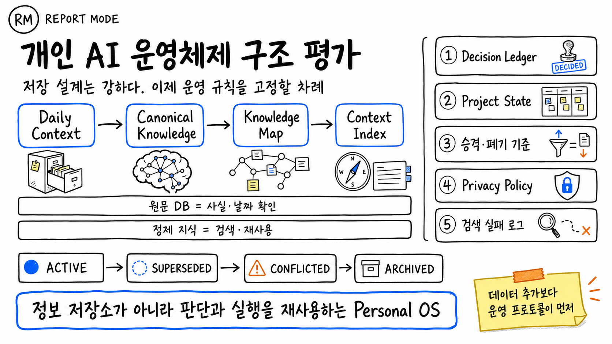

260803 · EXECUTIVE BRIEF
개인 AI 운영체제
구조 평가
저장 설계는 강하다. 이제 운영 규칙을 고정할 차례다.
2026.08.03 KST

AI 생성 인포그래픽 · 공식 제품 이미지 아님
🧭 한 문장 판단
현재 설계는 저장 구조만 보면 이미 Personal OS에 가깝다. 다음 병목은 데이터 양이 아니라 지식의 승격·충돌·폐기·보호·실행을 통제하는 운영 프로토콜이다.
📌 경영진 요약
1. 구조적 강점
원문 DB와 정제 지식을 분리해 사실 확인과 재사용을 동시에 확보했다.
원문 DB와 정제 지식을 분리해 사실 확인과 재사용을 동시에 확보했다.
2. 확장성
Daily Context에서 Context Index까지 이어지는 흐름은 전체 과거를 매번 탐색하지 않게 한다.
Daily Context에서 Context Index까지 이어지는 흐름은 전체 과거를 매번 탐색하지 않게 한다.
3. 실무성
태그와 관계를 분리하고 Vibe Coding을 실데이터·예외·테스트 기준으로 정의했다.
태그와 관계를 분리하고 Vibe Coding을 실데이터·예외·테스트 기준으로 정의했다.
4. 핵심 공백
승격·폐기, 충돌 상태, 프로젝트 현재값, 의사결정 근거, 개인정보 경계가 규칙으로 고정되지 않았다.
승격·폐기, 충돌 상태, 프로젝트 현재값, 의사결정 근거, 개인정보 경계가 규칙으로 고정되지 않았다.
우선 조치: Decision Ledger → Project State → 승격·폐기 기준 → Privacy Policy → Retrieval Failure Log. 단, 실제 구축 순서는 승격·상태·프라이버시 규칙을 먼저 두는 편이 안전하다.
🏗️ 1. 현재 구조 평가
| 구성 | 역할 | 평가 |
|---|---|---|
| 원문 DB | 사실·날짜·발화 확인 | 감사 추적성과 정정 가능성을 보존한다. |
| 정제 지식 | 검색·요약·재사용 | 원문과 역할을 분리한 것이 핵심 강점이다. |
| Daily Context | 최근 사건·대화·작업 수집 | 입력 계층으로 적절하지만 승격 기준이 필요하다. |
| Canonical Knowledge | 반복 사용 가능한 기준 지식 | 핵심 자산이자 충돌 관리가 가장 필요한 계층이다. |
| Knowledge Map | 관계·맥락 연결 | 태그보다 깊은 추론이 가능하지만 허위 연결을 경계해야 한다. |
| Context Index | 필요 맥락으로 빠른 라우팅 | 검색 비용과 불필요한 전체 탐색을 줄이는 실용적 설계다. |
⚖️ 2. 강점과 한계
| 강점 | 대응되는 한계 |
|---|---|
| 원문과 정제본 역할이 명확하다. | 승격 기준이 흐리면 정제본 오염이 누적된다. |
supports, contradicts, applies-to 관계를 표현할 수 있다. | AI가 그럴듯한 관계를 남발하면 Knowledge Map 신뢰도가 무너진다. |
| Context Index가 전체 검색을 피하게 한다. | 실패를 기록하지 않으면 같은 검색 오류가 반복된다. |
| 테스트·예외·실데이터 중심 Vibe Coding은 실무형이다. | 현재 단계와 다음 행동이 지식 카드에 섞이면 실행성이 떨어진다. |
| 다양한 업무를 같은 맥락으로 연결할 수 있다. | 개인정보·자동화 권한 경계가 약하면 확장성이 곧 노출 위험이 된다. |
🧾 3. 권장 운영 프로토콜
3.1 지식 상태 체계
ACTIVE · 현재 유효SUPERSEDED · 새 지식으로 대체CONFLICTED · 상충으로 자동 사용 제한ARCHIVED · 기본 검색 제외
상태 변경에는 변경일, 이유, 대체 항목, 검토자를 함께 남긴다.
3.2 Decision Ledger
| 필드 | 기록 내용 |
|---|---|
| Decision | 무엇을 결정했는가 |
| Rationale | 왜 이 선택을 했는가 |
| Alternatives | 검토했지만 선택하지 않은 대안 |
| Evidence | 판단에 사용한 원문·지식·테스트 |
| Revisit Trigger | 어떤 조건에서 재검토할 것인가 |
| Status | 현재 유효 상태 |
3.3 Project State
진행 업무는 현재 단계, 최근 완료, 다음 행동, 막힌 점, 담당 주체, 재검토일로 관리한다. 지식은 “무엇이 사실인가”, Project State는 “지금 무엇을 해야 하는가”를 담당한다.
3.4 Privacy Policy
민감정보는 최소한 개인 전용 / 제한 공유 / 공개 가능으로 구분한다. 단체방·외부 전송·자동화 실행은 기본값을 차단으로 두고 명시적 허용이 있을 때만 범위를 넓힌다.
3.5 Bridge Map과 검색 실패
연결마다 원리·실제 사례·반론·재사용 여부·근거를 남긴다. 근거 없는 유사성은 확정 관계가 아니라 제안으로 저장한다. Retrieval Failure Log에는 질문, 기대 결과, 실제 결과, 실패 원인, 수정 항목, 재시험 결과를 남긴다.
3.6 운영 안전장치와 지표
- 자동 승격·관계 생성·대량 삭제에는 미리보기와 사람 승인을 둔다.
- 모든 변경에는 변경 주체·이유·시간을 남기는 감사 로그를 적용한다.
- 버전 복구와 롤백 가능성을 정기적으로 시험한다.
- 정확도 외에
오래된 정보 노출률,충돌 미해결 건수,검색 반복 실패율,민감정보 사고 건수를 운영 지표로 관리한다.
🚦 4. 실행 우선순위
| 순위 | 항목 | 완료 기준 |
|---|---|---|
| 1 | 승격·폐기 기준 | Canonical 승격·보류·폐기 체크리스트가 파일로 고정됨 |
| 2 | 상태 관리 | 모든 Canonical 항목이 4개 상태 중 하나를 가짐 |
| 3 | Privacy Policy | 채널·전송·자동화별 범위와 기본 차단 규칙이 강제됨 |
| 4 | Decision Ledger | 중요 결정의 이유·대안·재검토 조건을 검색 가능하게 기록 |
| 5 | Project State | 다음 행동과 막힌 점이 지식 카드와 분리됨 |
| 6 | Retrieval Failure Log | 실패→수정→재시험 루프가 운영됨 |
📊 5. 세 가지 시나리오
| 시나리오 | 예상 결과 | 조건 |
|---|---|---|
| 낙관 | 지식·업무·콘텐츠·코딩이 같은 맥락에서 연결되고 판단 재사용성이 크게 상승 | 상태·권한·실패 로그가 자동화에 실제 적용됨 |
| 기준 | 검색과 재사용은 개선되지만 일부 정리 작업은 수동 유지 | 핵심 운영 파일을 만들고 정기 검토함 |
| 보수 | 데이터만 늘어 검색 충돌과 개인정보 위험이 커짐 | 승격·폐기·권한 기준 없이 수집을 우선함 |
⚠️ 6. 반대 논리와 실패 가능성
- 구조가 정교해질수록 유지 비용이 커져 기록 자체가 목적이 될 수 있다.
- 상태와 관계가 많아도 검색·결정 성능이 개선되지 않으면 형식적 메타데이터에 불과하다.
- AI가 승격과 관계 생성을 독점하면 잘못된 정제가 원문보다 더 자주 노출될 수 있다.
- Privacy Policy가 문서에만 있고 실행 계층에서 강제되지 않으면 안전장치가 아니다.
- Decision Ledger가 사소한 결정까지 담으면 핵심 판단을 찾기 어려워진다.
✅ 7. 최종 권고
더 많은 데이터를 넣는 일을 잠시 늦추고 운영 규칙을 먼저 파일로 고정해야 한다. 승격·폐기 기준과 상태 체계를 먼저 만들고, Privacy Policy를 실행 계층에서 강제한다. 이후 Decision Ledger와 Project State로 판단과 실행을 분리하고, Retrieval Failure Log로 검색 실패가 시스템 개선으로 되돌아오게 한다.
이 순서를 지키면 현재 시스템은 단순 정보 저장소를 넘어 판단과 실행을 재사용하는 개인 운영체제로 안정적으로 진화할 수 있다.
🔎 조사 질문·방법·한계
- 질문: 현재 구조가 Personal OS로서 어떤 강점과 운영상 공백을 갖는가?
- 방법: 현재 대화에서 제공된 25개 항목을 구조·운영·보안·검색·실행 관점으로 재분류했다.
- 한계: 실제 파일 구조, 검색 성능, 자동화 코드, 권한 집행 상태는 검증하지 않았다. 따라서 본 문서는 제공 내용에 대한 구조 평가이며 시스템 감사 결과가 아니다.
📚 전체 자료 출처
| 유형 | 자료명 | 제공자·저작자 | URL | 날짜 | 라이선스·상태 | 사용 범위 |
|---|---|---|---|---|---|---|
| 사용자 제공 내용 | 개인 AI 운영체제 구조 평가 요약 25개 항목 | 현재 대화 사용자 | 해당 Telegram 대화 | 2026-08-03 | 직접 제공·공개 가능 내용으로 처리 | 보고서 전체의 유일한 내용 근거 |
| AI 생성 이미지 | 개인 AI 운영체제 구조 평가 화이트보드 인포그래픽 | OpenAI 이미지 생성 도구 / Hermes 편집 지시 | 보고서 내부 자산 | 2026-08-03 | AI 생성·공식 제품 이미지 아님 | 상단 요약 시각자료 |